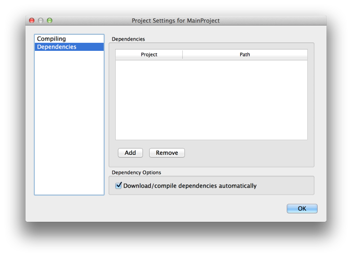

KISS IDE 5.0 Tutorial: Dependencies
KISS IDE is an instructional integrated development environment for the C and C++ programming languages. In this tutorial, you will learn about creating and using dependencies in KISS.
Libraries in C
Libraries can help you group related functions together, speed up compilation, or share code with others. In general, libraries are made up of source files and header files.Source Files
A source file is a file that contains functions and other definitions. For example, if we wanted to declare a function that returned the square of an integer, we would write something like this:
int square(int a) {
return a * a;
}
Header Files
Header files are necessary so that other files have an idea of the functions defined in source files. In other words, header files declare the functions that source files define. Let's say that we have a source file called my_math.c that contains utility functions like square. Then we create another source file called algebra.c. How do we use square from my_math.c in algebra.c? The answer is a header file. A header file exposes function prototypes to all source files that #include that header.
For example, a header for our my_math.c source file might be called my_math.h and look like this:
int square(int a);Now all we have to do is add
#include "my_math.h"to both
my_math.c and algebra.c and we're ready to go!
Dependencies in KISS
Dependencies in KISS represent libraries. When you create a project that is a dependency, it will be compiled as a library instead of an executable. Then, other projects can depend on the dependency and use its functions.
Creating a Dependency
First, create a simple library of functions that will serve as your dependency.- Create a new project with a new file, as in the "Hello World!" tutorial. Name the project
PrintLibrary. Name the new fileprint_lib.hand select the C header file template. This will be the header for your library. - In this file, insert the following after the
#defineline:void printHello(); void printBye();
These are the function prototypes that will be available to source files. - Add a new file to the project by right-clicking on it and clicking "Add New File..." Name the new file
print_lib.cand select the C blank file template. This will be the source file for your library. - In this file, insert the following lines:
#include "print_lib.h" #include <stdio.h> void printHello() { printf("Hello there!\n"); } void printBye() { printf("Goodbye!\n"); }These are the definitions of the functions declared in your header.
Using a Dependency
Now that you have created a dependency, you can create a separate project that depends on your dependency.- Create a new project with a new file, as in the "Hello World!" tutorial. Name the new file
main.cand select the C Hello World template. This will be your main file, and it will call functions from your library. - Make this file look like the following:
#include "PrintLibrary/print_lib.h" int main() { printHello(); printBye(); return 0; }The main function calls the two functions from your library. It knows that these functions exist because they are declared in the included header. Notice that, because the included header is part of a different project, the#includestatement is prefixed with the name of its project (in this case, "PrintLibrary").

- Finally, you must add PrintLibrary as a dependency of your main project. Right-click on your main project and click "Project Settings." Switch to "Dependencies" on the left side. Click "Add," select the
.kissprojfile associated with PrintLibrary, and click "Open." PrintLibrary will appear as a dependency in the table. Click "OK." - Test everything by compiling and running your main project. Compiling a project automatically compiles all dependencies, so PrintLibrary will automatically be downloaded and compiled.
Additional Settings
Some of the project settings can be useful when dealing with dependencies.- Compiling → Compile as: Sets whether the project is compiled as an executable or as a library. When you compiled your main project, its dependency was automatically downloaded and compiled as a library. But if try to compile the dependency by itself, you will get errors. This is because your dependency is being compiled as an executable (the default for projects) but doesn't have a
mainfunction. Changing this setting to "Library" will allow you to compile the dependency as a library. - Dependencies → Download/compile dependencies automatically: Sets whether the project's dependencies should be downloaded/compiled each time the project is downloaded/compiled. Unchecking this can decrease the time needed to download/compile the project. However, changes to dependencies will not take effect unless you manually compile the dependency.
Need Help?
If you have any questions or need assistance, you can call KIPR at 405-579-4609 (M-F, 8:30 a.m. - 5:00 p.m. CST) or email KIPR support.